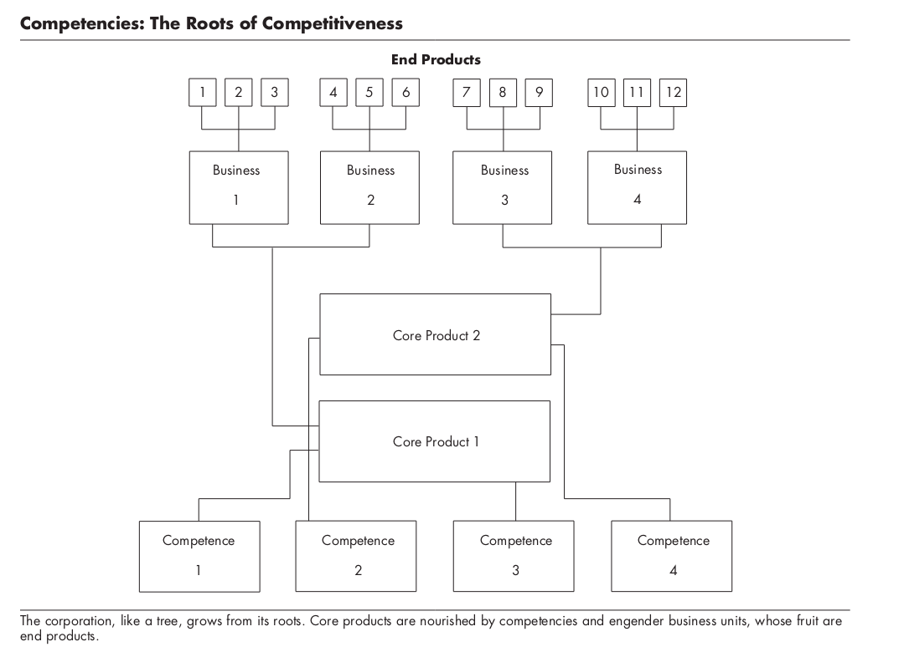

Wednesday, November 23, 2022
Core Competencies: An Introduction
What core competencies are? How do they enable businesses?
Core competencies are a collection of skill sets that help to differentiate a professional and their competitive worth to the business and thus the market. Despite much research, it is still unknown what constitutes a winning formula.
What should be highlighted is that a company that does not have collaborators who grow around their “core competencies” is unable to compete and create. “This is a deceptively difficult task.” Prahalad says.
 Fig. How competencies are strictly connected with our product development (from [1]).
We will be able to unravel the various portfolios of competences with which our scientists will be gifted by undertaking this exercise. It should be highlighted, however, that there is no expectation of a pre-defined set of competences, and the outcome of this exercise should not be interpreted as a recipe that must be followed. It should be regarded as a resource from which a scientist might advance into specialised areas of competence. In fact, a scientist can be defined in a variety of ways, and we provide the following examples for the purposes of this exercise:
-
An end-to-end scientist/engineer capable of developing concepts and bringing it to market;
-
A theoretical/fundamental scientist who understands the abstract and fundamental notions of a given subject; and,
-
An applied scientist who employs the appropriate concepts to solve real-world problems.
You may have noticed that I have offered three separate roles for different domains here. Even while this structure is on purpose, we won’t get into the specifics right now. Instead, we’ll concentrate on the competencies. Take ``Data Science’’ (it shouldn’t be seen as a discipline but as an umbrella-term/meta as it is composed of different) competencies such as mathematics (algebra, logic, number theory, calculus, statistics, graph theory, game theory, causality), computer science (software engineering, programming, networking, databases, data structures), artificial intelligence (machine learning, pattern recognition, computer vision, natural language processing), communication, economics/finance, and many others.
The issue that must be posed is, where can someone with, for example, natural language processing skills contribute the most to the product’s development?
Team responsibilities and setting expectations.
With that said, we should mention that for the sake of their competencies the following should be ascertained:
-
«Decentralization (…) as makes it difficult to focus on key competencies (causing individuals to become more reliant on outsiders for critical skills»;
-
On the other side, centralization may result in a lack of concentration because one team would be accountable for all types of problems, resulting in resource competition and extended delivery time. When this occurs, satellite teams often develop their own solutions, independent of the primary team.
-
Given the variety of paths that a scientist can take throughout their professional path, we will concentrate on the nuclear components of the role, ignoring any additional fields that would lead to specialisation.
Problem
At this moment, it is evident that we have three distinct angles: the business, the talents of an individual contributor, and, unavoidably, the team organization.
As a result, we can pose the following questions:
-
How do you design and create a product while maximising the competencies of individual contributors?
-
At the same time, how can we help to their continuous development and growth?
-
How should the teams be organised at the same time?
As should be evident, as the product expands (and, by extension, the teams centred on it grow in size), so does the problem, as do the diversity of technological solutions and, of course, the skills that feed its growth.
Next steps
In coming postings, I will explore some of my experience to address these hypotheses in further depth, leaving this article with the questions outlined above open for consideration.
References
[1] - Prahalad, C.K. and Hamel, G. (1990) “The core competence of the corporation”, Harvard Business Review (v. 68, no. 3) pp. 79–91.
Acknowledgments
I must admit that the exercise that resulted in this document was a lot of fun for me. It allowed me to better organise my thinking, and I am grateful to Rafaela Carvalho, my business partner when I was a data science manager at the time, for challenging me to describe this.
Photo by Cookie the Pom on Unsplash
comments powered by Disqus